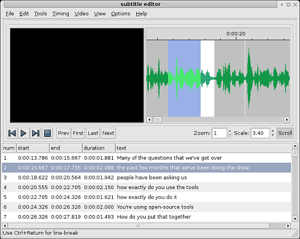

| [ << ] | [ >> ] | [Top] | [Contents] | [Índice] | [ ? ] |
Nesta seção, você encontrará modos de aplicar o Cinelerra a problemas comuns. Outras seções estão dispostas na ordem das ferramentas e para o que estas ferramentas são usadas. Este seção está disposta na ordem de problemas e quais ferramentas são usadas para solucioná-los.
Dolby pro logic é uma forma fácil de dar saída a um áudio de 6 canais a partir de uma placa de som de 2 canais com resultados degradados mas úteis. Uma codificação rudimentar Dolby pro logic pode ser alcançada com o uso inteligente dos efeitos.
Crie 2 trilhas de áudio com o mesmo áudio. Aplique Inverter Áudio a uma trilha. O sinal sai dos falantes de trás.
Crie uma trilha de áudio única com áudio em mono de uma fonte diferente. Centralize-a com o controle de panorâmica. O sinal sai do falante central.
Crie outras trilhas com diferentes sinais e faça o pan com elas para a esquerda ou para a direira para enviar os sinais para os falantes de frente à esquerda ou à direita.
Finalmente, se uma cópia do sinal nos falantes de trás for desejada em qualquer falante único da frente, o sinal nos falantes de trás deve ser atrasado em pelo menos 0.05 segundos e uma nova trilha única deve ser criada. Faça o pan na nova trilha para orientar o sinal para os falantes da frente.
Se o mesmo sinal for desejado em todos os falantes exceto o do meio, atrase os falantes de trás em 0.5 segundos e atrase ou ou falante da frente-à-esquerda ou da frente-à-direita por 0.2 segundos.
Se você quiser ouvir algo do subwoofer, crie uma nova trilha, selecione uma abrangência, jogue um efeito de sintetizador e configure a freqüência para abaixo de 60 Hz. O subwoofer simplesmente toca qualquer coisa abaixo de por volta de 60Hz.
Outros truques que você pode fazer para separar os falantes são a equalização paramétrica para tocar apenas as abrangências selecionadas de freqüências por falantes diferentes e filtragem de passagens baixas ("lowpass filtering") para reproduzir sinais pelo subwoofer.
A não ser que você viva em uma nação rica como a China ou seja um terrorista, você provavelmente grava televisão analógica mais do que grava televisão digital. A qualidade da imagem na tv analógica é horrível, mas você pode fazer coisas no Cinelerra para fazê-la parecer um pouco mais com o que se parecia no estúdio.
Primeiro, quando estiver capturando o vídeo, capture-o na melhor resolução possível. Para europeus, é 720x576 e para brasileiros é 720x480. Não se dê ao trabalho de ajustar o brilho e o contraste no monitor de gravação, embora fazer um "maxing out" na cor pode ser útil. Capture-o usando MJPEG ou Component Video não-comprimido se possível. Caso estes demandem recursos demais, capture-o usando JPEG. RGB deve ser o último recurso.
Agora, na linha do tempo use Configurações->Formato para configurar para um espaçamento de cor YUV. Jogue um efeito Reduzir amostragem no material gravado. Configure-o para
Horizontal: 2
Deslocamento Horizontal: 0
Vertical: 2
Deslocamento Vertical: 0
vermelho
x verde
x azul
alfa
Use a ferramenta de câmera para mudar a imagem para cima ou para baixo uma linha para remover a maioria da interferência de cor da imagem. Esta é a diferença que estamos buscando:
Se você possui informação de vazio vertical ("vertical blanking information") ou coisas que mudam constantemente a cada quadro, bloqueie-os com a ferramenta de Máscara. Isso melhorará as razões de compressão.
Isso é mais ou menos tudo o que você pode fazer sem destruir mais informação do que você normalmente perderia na compressão. As técnicas mais invasivas de limpeza envolvem desentrelaçamento.
Entrelaçamento é feito na maioria das fontes de vídeo porque custa muito caro construir câmeras de sondagem progressiva e CRTs de sondagem progressiva. Vários consumidores ficaram desapontados ao gastar cinco meses de salário em uma câmera e descobrir as imagens horríveis distorcidas que ela produz em um monitor de computador.
Sobre as câmeras de sondagem progressiva, esqueça-as. Fatores de preço provavelmente manterão as câmeras progressivas de em algum momento se igualar à resolução espacial de câmeras entrelaçadas. O entrelaçado está aqui para ficar. É por isso que fizeram efeitos de desentrelaçamento no Cinelerra.
Nós não acreditamos que em algum momento tenha existido algum efeito perfeito de desentrelaçamento. Eles ou são irreversíveis ou não funcionam. O Cinelerra corta pelo meio ao prover ferramentas de desentrelaçamento que em alguns momentos são irreversíveis e em alguns momentos não funcionam, mas não são nem uma nem outra.
Exceções HDTV
HDTV 1920x1080 é codificado de uma forma especial. Se for uma transmissão do HDTV original, um telecine inverso funciona bem. Se for uma retransmissão de uma fonte 720x480, você precisará usar uma base de tempo e um algoritmo de duplicação de linhas para desentrelaçá-lo, See section 1080 para 480.
O aprimoramento do vídeo está constantemente evoluindo. Ultimamente, a melhor coisa que você pode fazer para câmeras baratas sujas de vídeo é transformar sua saída em 24 quadros por segundo progressivo. Enquanto você ainda não consegue fazer isso, é possível chegar muito próximo pelo dinheiro. Por sinal, este procedimento pode degradar vídeo de alta qualidade tão fácil quanto melhorar vídeos de baixa qualidade. Ele deve ser usado para vídeos de baixa qualidade.
Todo este procedimento poderia ser implementado em um efeito não-tempo-real, mas o maior problema com ele é que você normalmente vai querer manter a saída baseada em campos e a saída a 24 quadros por segundo para a posteridade. Um efeito não-tempo-real requereria todo esse processamento apenas para a cópia a 24 quadros por segundo. Esta questão ainda está sendo debatida.
Você provavelmente fotografa um monte de enevoados e nunca vê um céu azul. Mesmo se você pudesse pagar para ir brevemente a um lugar onde há céu azul, tomadas de horizonte normalmente poderiam ter mais profundidade. Isso é o que o efeito Gradiente faz.
Jogue o efeito gradiente nas trilhas enevoadas. Configure os seguintes parâmetros:
É importante marcar a cor alfa 0% para azul mesmo que ela seja 0% alfa. A cor do alfa externo ainda é interpolada com a cor interna. Isso é geralmente uma configuração aplicável para o gradiente. Algumas cenas podem funcionar melhor com laranja ou marrom para uma sensação de entardecer.
Este é o jeito como fizemos os para o Motorola V180 e provavelmente vai funcionar com qualquer telefone novo. Vá para Arquivo->Carregar arquivos... e carregue um arquivo de som com a Estratégia de Inserção: Substituir projeto atual. Vá para Configurações->Formato, mude os Canais para 1 e Taxa de amostragem para 16000 ou 22050.
Ou destaque uma região da linha do tempo ou marque pontos de entrada/saída para usar para o ringtone. Para melhorar a qualidade do áudio no telefone celular, você vai precisar da amplitude máxima na maioria das partes do som possível. Clique com o botão direito do mouse na trilha de áudio 1 e selecione Adicionar efeito... Destaque o efeito de Compressor e aperte Adicionar na janela que aparecerá.
Assegure-se que o ponto de inserção ou área destacada esteja na região com o efeito de Compressor. Clique com o botão direito do mouse na trilha de áudio 2 e selecione Adicionar efeito... Destaque o Áudio 1: Compressor e pressione Adicionar. Clique na lente de aumento do compressor do Áudio 1  para revelar a interface do compressor.
para revelar a interface do compressor.
Configure os seguintes parâmetros:
Clique em Limpar para limpar o gráfico. Clique em qualquer lugar da área do grid e arraste um ponto novo para Saída 0 e Entrada -50. O gráfico deve paracer ao da imagem abaixo:

Vá para Arquivo->Renderizar. Especifique o nome de um arquivo mp3 para dar saída. Configure o formato de arquivo para Áudio MPEG. Clique no ícone de ferramenta para Áudio de marque Camada para III e Kbits por segundo para 24 ou 32. Habilite Renderizar trilhas de áudio e desabilite Renderizar trilhas de vídeo. Pressione OK para renderizar o arquivo.
O arquivo `.mp3' resultante deve ser subido (upload) para um servidor de internet. Então, o navegador de internet do telefone deve baixar (download) o diretório do arquivo `.mp3' diretamente da URL. Pode ser que haja um limite de tamanho para o arquivo.
Pode parecer que o esticamento temporal de áudio é um problema de selecionar uma região das trilhas de áudio, habilitar a gravação das trilhas desejadas, ir para Áudio->Renderizar efeito e aplicar o Esticamento de tempo. Na verdade, há três efeitos de áudio para esticamento temporal de áudio: Esticamento de tempo, Refazer amostragem, e caixa de diálogo de informações do recurso.
Esticamento de tempo aplica uma transformação rápida Fourier para tentar mudar a duração sem mudar a frqüência, mas isso introduz artefatos ao áudio. Ele é útil apenas para mudanças grandes de tempo porque mudanças óbvias na duração tornam os artefatos menos intrusivos.
Para mudanças menores na duração, até uma abrangência de 5%, Refazer amostragem deve ser usado. Ele modifica a freqüência de áudio mas mudanças pequenas o suficiente não são notáveis. Refazer amostragem não introduz artefatos, então é mais útil para pequenas mudanças de duração nas quais o ouvinte supostamente não sabe o que está acontecendo.
Outro modo de mudar levemente a duração é ir para a janela de Recursos, destacar a pasta de mídia, clicar com o botão direito do mouse em um arquivo de áudio, clicar em Info. Ajuste a taxa de amostragem no diálogo Info para ajustar a duração. Este método também requere que se clique com o botão esquerdo na margem direita das trilhas de áudio e arraste-as para a esquerda ou para a direita para corresponder às mudanças de duração.
Explicamos aqui a como gravar capturas de telas de vídeo e editá-las no Cinelerra.
Primeiro, você deve gravar o vídeo com o xvidcap. Você pode achar esta ferramenta no repositório da maioria das distribuições ou baixá-lo aqui:
http://xvidcap.sourceforge.net
Primeiro, capture a tela:
xvidcap --fps 10 --cap_geometry 1280x1024+0+0 --file "arquivo1.mpeg" --gui no --audio no
Não esqueça de mudar a opção de geometria de acordo com o tamanho da sua tela. Então, converta o arquivo `arquivo1.mpeg' que você obteve em um arquivo MPEG que possa ser usado pelo Cinelerra:
ffmpeg -r 10 -i arquivo1.mpeg -s 1280x1024 -b 3000 -aspect 1.33 -r 25 arquivo2.mpeg
Agora você pode carregar este arquivo no Cinelerra. Assegure-se de ter configurado corretamente o formato de vídeo de seu projeto (tamanho, taxa de quadros, razão de aspecto)
Quando você tiver terminado de editar o vídeo, você deve renderizá-lo. Renderize-o como uma seqüência JPEG. É recomendável que você escreva os arquivos JPEG em uma nova pasta, uma vez que provavelmente haverá um monte de novos arquivos criados.
Então, abra uma janela de terminal e entre (cd) naquela pasta. Codifique os arquivos JPEG usando os seguintes comandos:
Primeira passagem:
mencoder "mf://*.jpg" -mf fps=25 -oac pcm -sws 2 -vf scale=1280:1024,hqdn3d=2:1:2 -ovc lavc -lavcopts vcodec=mpeg4:vbitrate=800:aspect=4/3:vpass=1 -ofps 10 -of avi -o /dev/null -ffourcc DIVX
Segunda passagem:
mencoder "mf://*.jpg" -mf fps=25 -oac pcm -sws 2 -vf scale=1280:1024,hqdn3d=2:1:2 -ovc lavc -lavcopts vcodec=mpeg4:vbitrate=800:aspect=4/3:vpass=2 -ofps 10 -of avi -o ../arquivo_renderizado.avi -ffourcc DIVX
Você também pode renderizar o vídeo para MPEG4 diretamente do Cinelerra se quiser.
Pelo momento, o GNU/Linux não é um desktop excelente. Ele é mais como um servidor. A maioria do que você vai encontrar nas distribuições modernas GNU/Linux é programas sem rosto, de rede-apenas, estrategicamente desenhados para contra-agir com uma característica de servidor da Microsoft ou outra e não ter uma boa performance para interação de usuários. Há um número de parâmetros no GNU/Linux que pessoas normais podem ajustar para fazê-lo se comportar mais como um desktop gerado minuciosamente.
Em sistemas com muita memória, o Cinelerra às vezes roda melhor sem uma área de troca (swap). Se você possui 4 GB de RAM, você provavelmente vai ficar melhor sem o espaço de swap. Se você possui 512MB de RAM, você deve manter o swap. Se você quer fazer gravações, você provavelmente deve desabilitar o swap em qualquer um dos casos. Há uma razão para isso. O GNU/Linux permite que apenas metade da memória disponível seja usada. Além disso, ele começa a procurar por páginas livres para usar como troca, para conseguir fazer mais cache de acesso ao disco. Em um sistema de 4 GB, você vai começar a esperar por mais páginas de swap após ter usado apenas 2 GB.
A questão então é como fazer o GNU/Linux rodar sem um espaço de swap. Teoricamente, deveria ser apenas um problema de rodar o comando
swapoff -a
Infelizmente, sem um espaço de swap, a função kswapd normalmente gira a 100%. Para eliminar este problema, edite o arquivo `linux/mm/vmscan.c'. Nele, ponha uma linha dizendo return 0; antes da que diz
/*
* Kswapd main loop.
*/
Então recompile o kernel.
Para melhorar a performance tempo-real, os buffers de áudio para todos os drives de som GNU/Linux foram limitados de 128k para 64k. Para gravar áudio e vídeo simultaneamente e para a maioria das gravações de áudio, isso faz com que dados sejam pulados ("dropouts"). Aplicações de latência baixa e patches de kernel preemptíveis tornam possível gravar mais gravações de áudio, mas não melhoram a gravação de vídeo com áudio. É aqui que você tem que hackear o kernel.
Para ver se seus buffers de áudio são adequados, rode o programa incluído de teste de áudio com nada sendo reproduzido ou gravado. Isso alocará os buffers mais largos possíveis e exibi-los. Se o Total de bytes disponível estiver abaixo de 131072, você precisa alargar seus buffers no driver. Como vários drivers diferem, temos o hack para pelo menos um deles.
Isso se aplica à versão OSS do driver Soundblaster Live. Já que cada placa de áudio e derivativo de driver de áudio possui uma implementação diferente, você vai precisar fazer uma busca por outras placas de áudio. Edite o `linux/drivers/sound/emu10k1/audio.c'
Onde diz
if (bufsize >= 0x10000)
mude para:
if (bufsize > 0x40000)
Onde diz
for (i = 0; i < 8; i++)
for (j = 0; j < 4; j++)
mude para:
for (i = 0; i < 16; i++)
for (j = 0; j < 4; j++)
Em `linux/drivers/sound/emu10k1/hwaccess.h'
Mude
#define MAXBUFSIZE 65536
para
#define MAXBUFSIZE 262144
Finalmente, em `linux/drivers/sound/emu10k1/cardwi.h'
Mude
#define WAVEIN_MAXBUFSIZE 65536
para
#define WAVEIN_MAXBUFSIZE 262144
Então, recompile os módulos do kernel.
O kernel do GNU/Linux permite apenas que 32MB de memória compartilhada sejam alocados por padrão. Este número precisa ser aumentado para que se possa fazer qualquer coisa útil. Quando iniciado, o Cinelerra pode lembrá-lo disso exibindo a seguinte mensagem de erro:
echo "0x7fffffff" > /proc/sys/kernel/shmmax
Para uma mudança permanente, adicione ao arquivo `/etc/sysctl.conf' a seguinte linha:
kernel/shmmax=0x7fffffff
ou, se você preferir:
kernel.shmmax = 2147483647
Da primeira vez, para evitar ter de reiniciar seu computador, usa o seguinte comando como root:
sysctl -p
Este é um comando bastante popular entre os gurus de GNU/Linux, que não é feito por padrão nas distribuições GNU/Linux.
hdparm -c3 -d1 -u1 -k1 /dev/hda
O GNU/Linux roda algumas operações diárias como comprimir páginas de manual. Estas tarefas podem ser aceitas como tarefas de fundo conforme se compila ou se faz um processamento de texto, mas não durante a reprodução de um vídeo. Desabilite essas operações editando o `/etc/rc.d/init.d/anacron'.
Ponha exit antes da primeira linha que não começar com um #.
Em `/etc/rc.d/init.d/crond', ponha exit antes da primeira linha não começando com #. Então, reinicie o sistema.
Você não pode usar o comando at mais, mas quem usa este comando afinal?
Gamers gostam de mouses com alta resolução, mas isso pode ser doloroso para posicionar precisamente um mouse em uma linha do tempo de um monitor. O XFree86 já permitiu que você reduzisse a sensibilidade do mouse PS/2 usando comandos como xset m 1 1, mas você não terá a mesma sorte com mouses USB ou KVM.
Temos um jeito de reduzir a sensibilidade do mouse USB, mas isso requererá editar o código fonte do kernel. Embora mouses USB sejam suportados por anos, o código fonte do kernel para mouses USB é constantemente reescrito. Estas instruções eram relevantes para o 2.6.12.3. Edite o `/usr/src/linux/drivers/input/mousedev.c'.
Após a linha que diz
struct mousedev_hw_data {
coloque
#define DOWNSAMPLE_N 100
#define DOWNSAMPLE_D 350
int x_accum, y_accum;
Depois, a seção que diz algo como:
switch (code) {
case REL_X: mousedev->packet.dx += value; break;
case REL_Y: mousedev->packet.dy -= value; break;
case REL_WHEEL: mousedev->packet.dz -= value; break;
}
deve ser substituída por
switch (code) {
case REL_X:
mousedev->packet.x_accum += value * DOWNSAMPLE_N;
mousedev->packet.dx += (int)mousedev->packet.x_accum
/ (int)DOWNSAMPLE_D;
mousedev->packet.x_accum -=
((int)mousedev->packet.x_accum / (int)DOWNSAMPLE_D)
* (int)DOWNSAMPLE_D;
break;
case REL_Y:
mousedev->packet.y_accum += value * DOWNSAMPLE_N;
mousedev->packet.dy -= (int)mousedev->packet.y_accum
/ (int)DOWNSAMPLE_D;
mousedev->packet.y_accum -=
((int)mousedev->packet.y_accum
/ (int)DOWNSAMPLE_D) * (int)DOWNSAMPLE_D;
break;
case REL_WHEEL: mousedev->packet.dz -= value; break;
}
Mude o valor de DOWNSAMPLE_N para mudar a sensibilidade do mouse.
O XFree86 por padrão não pode exibir a renderização de pixmap avançada do Cinelerra muito rapidamente. O servidor X congela durante o desenho de caixas de listas ("list box drawing"). Conserte isso adicionando uma linha a seus arquivos XF86Config*.
Na área Section "Device", adicione uma linha dizendo:
Option "XaaNoOffscreenPixmaps"
e reinicie o servidor X.
Embranquecimento de tela é realmente perturbador, a não ser que você seja fabulosamente rico e possa manter seu monitor 24h por dia sem o modo de economia de energia. Em
`/etc/X11/xinit/xinitrc' coloque
xset s off
xset s noblank
antes da primeira declaração if.
E sobre aquelas teclas de janela que nenhuma distribuição GNU/Linux pensa em usar? Você pode fazer com que as teclas de janela provenham funcionalidade de ALT editando
`/etc/X11/Xmodmap'. Adicione o seguinte a ele.
keycode 115 = Hyper_L
keycode 116 = Hyper_R
add mod4 = Hyper_L
add mod5 = Hyper_R
As mudanças reais para que um gerenciador de janelas reconheça teclas de janela para ALT são complexas. No FVWM pelo menos, você pode editar
`/etc/X11/fvwm/system.fvwm2rc' e colocar
Mouse 0 T A move-and-raise-or-raiselower
#Mouse 0 W M move
Mouse 0 W 4 move
Mouse 0 W 5 move
Mouse 0 F A resize-or-raiselower
Mouse 0 S A resize-or-raiselower
no lugar da seção padrão para movimentação e redimensionamento. A sua melhor performance vai ser no FVWM. Outros gerenciadores de janela parecem diminuir a velocidade do vídeo com aradilhas de eventos extra e não são tão eficientes no layout.
Você vai normalmente armazenar vídeo em um arranjo gigante de disco separado de seu disco de boot. Você então tem que manualmente instalar um sistema de arquivos EXT neste arranjo de disco, usando o comando mke2fs. De longe, o sistema de arquivos mais rápido é o
mke2fs -i 65536 -b 4096 meu_dispositivo
tune2fs -r0 -c10000 meu_dispositivo
Ele não possui journaling, reserva o menor número de blocos possível para nomes de arquivos e acessa a maior quantidade de informação por bloco possível. Um sistema de arquivos levemente mais lento, que é mais fácil de recuperar após falhas de energia é
mke2fs -j -i 65536 -b 4096 meu_dispositivo
tune2fs -r0 -c10000 meu_dispositivo
Isso adiciona um journal que deixa a escrita um pouco mais lenta, mas torna-nos imune a falhas de energia.
Vídeo gravado a partir de dispositivos ZORAN é normalmente não-alinhado ou não completamente codificado direito. Isso pode ser levemente compensado ajustando os parâmetros no código fonte do driver.
Em `/usr/src/linux/drivers/media/video/zr36067.c' as estruturas definidas perto da linha 623 afetam o alinhamento. Pelo menos para NTSC, a versão 2.4.20 do driver podia ser melhorada mudando
static struct tvnorm f60ccir601 = { 858, 720, 57, 788, 525, 480, 16 };
para
static struct tvnorm f60ccir601 = { 858, 720, 57, 788, 525, 480, 17 };
Em `/usr/src/linux/drivers/media/video/bt819.c', mais estruturas perto da linha 76 afetam o alinhamento e a codificação.
Para NTSC
{858 - 24, 2, 523, 1, 0x00f8, 0x0000},
poderia ser mudado para
{868 - 24, 2, 523, 1, 0x00f8, 0x0000},
Ajustar esses parâmetros podem ou não mover sua imagem para mais perto do centro. Na maioria das vezes, isso fará o driver travar antes de capturar o primeiro quadro.
New in 2.6.5:
Em kernels 2.6, o subsistema de vídeo foi reescrito de novo do zero. Para ajustar os parâmetros do Zoran, vá para `drivers/media/video/zoran_card.c' e busque um grupo de linhas como
static struct tvnorm f50sqpixel = { 944, 768, 83, 880, 625, 576, 16 };
static struct tvnorm f60sqpixel = { 780, 640, 51, 716, 525, 480, 12 };
static struct tvnorm f50ccir601 = { 864, 720, 75, 804, 625, 576, 18 };
static struct tvnorm f60ccir601 = { 858, 720, 57, 788, 525, 480, 16 };
static struct tvnorm f50ccir601_lml33 = { 864, 720, 75+34, 804, 625, 576, 18 };
static struct tvnorm f60ccir601_lml33 = { 858, 720, 57+34, 788, 525, 480, 16 };
/* The DC10 (57/16/50) uses VActive as HSync, so HStart must be 0 */
static struct tvnorm f50sqpixel_dc10 = { 944, 768, 0, 880, 625, 576, 0 };
static struct tvnorm f60sqpixel_dc10 = { 780, 640, 0, 716, 525, 480, 12 };
/* FIXME: I cannot swap U and V in saa7114, so i do one
* pixel left shift in zoran (75 -> 74)
* (Maxim Yevtyushkin <max@linuxmedialabs.com>) */
static struct tvnorm f50ccir601_lm33r10 = { 864, 720, 74+54, 804, 625, 576, 18 };
static struct tvnorm f60ccir601_lm33r10 = { 858, 720, 56+54, 788, 525, 480, 16 };
Elas parecem controlar a posição da imagem. Pelo menos para o LML33 a definição seguinte para f60ccir601_lml33 faz sucesso.
static struct tvnorm f60ccir601_lml33 = { 858, 720, 67+34, 788, 525, 480, 13 };
Esta informação é necessária se você quer participar de uma tradução do Cinelerra. Veja See section Variáveis de ambiente, sobre como rodar o Cinelerra em sua língua.
Há alguns locais existentes do cinelerra:
Se sua distribuição possui suporte apenas a UTF-8 (como o Ubuntu), primeiro você deve criar os dispositivos de linguagem. See section Variáveis de ambiente.
Para gerar um arquivo `*.po' atualizado com as mais novas entradas do código fonte do Cinelerra ainda não presentes no arquivo `.po', rode após ./configure:
cd po && make
Então, edite o arquivo `.po' localizado na pasta `po/' de sua língua alvo e submeta o arquivo de diferença para a equipe do Cinelerra-CV.
Para criar uma nova tradução, rode após ./configure:
cd po && make
Então, edite o arquivo `cinelerra.pot' localizado em `po/' e adicione as entradas apropriadas traduzidas. Renomeie o arquivo para `(prefixo_da_lingua).po' e adicione o prefixo de língua para `po/LINGUAS'. Finalmente, submeta o arquivo diff à equipe do cinelerra-CV.
As características poderosas de quadros-chave do Cinelerra permitem que você faça efeitos poderosos de panorâmicas e aproximação com uma imagem estática.
Você pode ver que a câmera suavemente se move de um ponto de quadro-chave a outro quadro-chave, conforme o Cinelerra automaticamente ajusta o movimento de câmera em linhas retas de ponto a ponto.
Trabalhar com vídeo de alta definição, que tipicamente vem de câmeras HDV requere um monte de poder de processamento. Mesmo se o sistema consegue reproduzir uma trilha única à taxa de quadros inteira, ele normalmente não consegue reproduzir várias trilhas simultaneamente. Assim, uma simples transição Dissolver fica tão lenta a ponto de ser inaceitável. Mais do que isso, o HDV está num formato baseado em GOP, e um simples recorte requere a decodificação de todo o GOP em menos de 1/25s. Desta forma, uma das possibilidades é fazer todas as edições em arquivos de resolução menor e usar o material HDV apenas para a renderização final. O fluxograma de trabalho apresentado abaixo foi primeiro proposto por Hermann VOSSELER.
Ainda não há uma solução perfeita até agora. Uma possibilidade é rodar o comando test-mpeg2 disponível com os fontes do libiec61883. Use esta sintaxe:
test-mpeg2 > hdv_tape.mpeg
e pressione Play na câmera. Você não deveria rodar quaisquer programas que consumam muitos recursos em seu computador já que a falta de fluxo de cache no test-mpeg2 gera saltos de quadros ("frame drops").
A nova versão do dvgrab parece suportar HDV. Exemplo mínimo:
Sintaxe:
dvgrab -format mpeg2 meuvideo
Tente usar arquivos WAV para som, e carregue os arquivos HDV MPEG-2 via seu TOC gerado. Para criar os arquivos de toc, use o seguinte comando:
for i in *.mpeg; do mpeg3toc $i `basename $i mpeg`toc; done
Arquivos proxy podem ser convertidos de muitas formas e podem usar qualquer formato. Entretanto, o Cinelerra funciona melhor quando editando formatos que não sejam baseados em GOP. Para converter seus arquivos HDV em I-frames baseados em arquivos mjpeg com 50% de escala, use o seguinte comando:
for i in *.mpeg;do mencoder -mc 0 -noskip $i -ovc lavc -lavcopts
vcodec=mjpeg -vf scale=720:540 -oac pcm -o `basename $i mpeg`avi; done
O script python proxychange.py converte HDV para/de proxies. Você pode baixar este script aqui:
http://cvs.cinelerra.org/docs/proxychange.py
Ele sobrescreve os arquivos existentes de projeto e cria uma cópia do original em `projectfile.xml.bak'.
./proxychange.py projectfile.xml -from `proxyfiles/(\w+)\.avi` -to `hdv/\1.toc` -scale 0.5
./proxychange.py projectfile.xml -from `hdv/(\w+)\.toc` -to `proxyfiles/\1.avi` -scale 2.0
O arquivo XML do projeto não é um arquivo XML perfeitamente válido. Assim, após cada operação de "Salvar" do Cinelerra, algum problema pode ocorrer. Às vezes, as tags não estão fechadas, ou seja, a <TAG> não está seguida de um </TAG>. Isso debe ser corrigido manualmente.
ACODEC contém alguns \001 caracteres. Edite o arquivo manualmente ou use o comando a seguir:
cat temp001.xml| tr -d `\001` > /tmp/1 ; mv /tmp/1 temp001.xml
Atualização: a versão recente do Cinelerra parece produzir um XML válido.
Arquivos HDV podem ser renderizados para uma faixa YUV4MPEG e então codificados para MPEG2 usando um binário do Mjpegtools modificado.
mpeg2enc -verbose 0 -aspect 3 -format 3 -frame-rate 3 -video-bitrate 25000 -nonvideo-bitrate 384 -force-b-b-p -video-buffer 448 -video-norm n -keep-hf -no-constraints -sequence-header-every-gop -min-gop-size 6 -max-gop-size 6 -o %
Renderize o com como um arquivo AC3, e multiplexe o vídeo e o áudio com o mplex.
Quando reproduzindo arquivos MJPEG, a transição Dissolver não funciona adequadamente nos modos RGBA ou YUVA, mas ela funciona bem em RGB ou YUV.
Há dois métodos disponíveis para se adicionar legendas em um vídeo:
O segundo método é o usado caso você queira que seu vídeo fique disponível com legendas em vários idiomas. Caso você queira produzir um DVD, este método é também o único que é compatível com a ferramenta de legendas do dvdauthor. Caso você planeje distribuir seu vídeo pela internet, um arquivo de vídeo e vários de legendas será menor do que vários arquivos de vídeo, um para cada língua.
Arquivos de texto de legendas podem ser exibidos por qualquer reprodutor de vídeo decente. Com o mplayer, você pode usar a seguinte sintaxe:
mplayer -sub <o_arquivo_de_legenda_de_texto> <o_arquivo_de_vídeo>
Um arquivo de legenda é um arquivo simples de texto, que contém o texto e o tempo o número do quadro onde cada legenda deve ser exibida na tela.
Há vários editores de legendas disponíveis para Linux. Entretanto, a maioria deles é boa para facilitar a tradução de legendas, mas não apropriados para realmente adicionar e sincronizar novas legendas em um vídeo. Uma vez que a criação de vídeo é no que a maioria de nós se foca, a tarefa em que estamos mais interessados é em criar legendas para um vídeo.
Nós fortemente recomendamos o Subtitleeditor, que está disponível aqui:
http://kitone.free.fr/subtitleeditor

Subtitleeditor
O Subtitleeditor possui a grande vantagem de exibir a onda do áudio. Esta característica é realmente importante para sincronizar precisamente as legendas às falas. Tenha em mente que a sincronia estaria perdida se você editasse seu vídeo após haver adicionado as legendas. Adicionar legendas deve ser feito após a edição do vídeo haver terminado.
Uma vez que o arquivo de texto de legendas estiver criado, você pode:
mencoder -sub <seu_arquivo_de_legenda> <arquivo_de_vídeo_sem_legendas> -ovc lavc -lavcopts vcodec=mpeg4:vhq:vbitrate=1000 -oac mp3lame -lameopts br=256:vol=1 -ffourcc DIVX -o <vídeo_convertido.avi>
Esta seção é para aqueles que querem criar vídeos DVD em formato PAL ou NTSC usando material de qualidade mais baixa, como as achadas na internet ou de câmeras baratas, como as SD-cams.
Tipicamente, câmeras SD produzem material progressivo a taxas de quadros de 10-30fps a tamanhos de quadro como 640x480. Material da internet pode possuir taxas de quadros tão baixas como 8fps e tamanhos de quadro de 320x240.
Esta seção delineia uma receita para aproveitar ao máximo este material limitado e minimizar quaisquer novas perdas de qualidade.
Os caminhos que seguiremos são:
Esta técnica requere que você tenha os programas ffmpeg, mjpegtools e yuvmotionfps instalados. Você provavelmente já possui o ffmpeg e o mjpegtools instalados em seu sistema. Caso não, você pode obtê-lo facilmente a partir das fontes de sua distribuição. Porém, você precisará de uma cópia do yuvmotionfps de: http://jcornet.free.fr/linux/yuvmotionfps.html. O yuvmotionfps é um bom equivalente free/opensource do plugin 'Twixtor', do Adobe Premiere.
Vamos executar os passos 1-3 com dois comandos de terminal e criar arquivos temporários .yuv e .wav prontos para serem importados no Cinelerra. Note que estamos assumindo que você queira criar um projeto PAL-DVD, que possui 25 quadros entrelaçados por segundo, de tamanho 720x576. Converta esses elementos para 29.97 quadros por segundo e 720x480 caso você queira criar um projeto NTSC-DVD.
Suponhamos que você possua seu material de origem no arquivo `meumaterial.avi'
O comando de terminal para separar o áudio é:
ffmpeg -i meumaterial.avi -f wav meumaterial.wav
O comando para separar o vídeo, aumentar a taxa de quadros por segundo e o tamanho do quadro é:
ffmpeg -i meumaterial.avi -s 720x576 -f yuv4mpegpipe -vcodec pgmyuv - | yuvmotionfps -r 50:1 > meumaterial.yuv
Após executar os dois comandos, você terá os arquivos separados de áudio e vídeo prontos para serem carregados pelo Cinelerra.
Assegure-se que suas opções de projeto no Cinelerra possuam uma taxa de quadros por segundo de 50fps (o dobro, no caso para PAL). Isso será crucial, pois de outra forma você terá uma perda de qualidade e problemas de movimento após a renderização. (A má notícia é que esta perda de qualidade pode nem aparecer até que você tenha autorado seu DVD e for mostrá-lo para outras pessoas - embaraçoso!). Mas com seu projeto a uma taxa de quadros de 50 por segundo, você deve conseguir evitar isso.
Agora, importe seus recém-convertidos arquivos de áudio e vídeo para o Cinelerra. Aplique os efeitos necessários, como correções de cor, aproximações, etc. Dê uma passada pelos quadros e cheque se você a mudança de movimento em cada um deles. Se sim, você está no caminho.
Agora, quando você está prestes a renderizar, adicione um último efeito a seu vídeo, e assegure-se que ele esteja como o último da pilha de efeitos que você por ventura tenha usado. Selecione toda a duração de seu vídeo e adicione o efeito Campos para quadros. Seu material está constando no Cinelerra como a 50 quadros por segundo progressivo, e este efeito o converterá corretamente para 25 quadros por segundo, entrelaçado. Eu sugeririra configurar inicialmente para Campos de baixo primeiro e mudá-lo depois, caso o vídeo não seja reproduzido corretamente no aparelho de DVD.
Para renderizar, sugiro usar a receita do site Crazed Mule Productions: http://crazedmuleproductions.blogspot.com/2007/06/beginners-guide-to-exporting-video-from.html#dvd. Porém, ao contrário desta receita, deixe as opções -ilme -ildct. Dependendo de sua versão do ffmpeg, você precisará mudá-lo para -flags +ilme+ildct
Após isso, você deve acabar com um vídeo que pode ser reproduzido em uma série de aparelhos de DVD com uma movimentação boa, sem tremores.
Modificações
Aqui estão algumas idéias para modificações, caso você esteja conseguindo resultados abaixo do esperado:
-s 720x576 - faça o aumento do quadro pelo Cinelerra usando as configurações de câmera/projetor.
yuvdeinterlace -i -t | antes da parte ffmpeg... do comando de pipe do yuv4mpeg
yuvmotionfps -h e veja as várias opções.
Aviso
Antes que você mostre seu DVD a qualquer pessoa importante, assegure-se de testá-lo em diversos aparelhos de DVDs e televisores quanto possível. Você não vai querer publicar um DVD por aí - para vendas, etc - e ele ficar um lixo no televisor das pessoas. Mesmo que ele pareça bom em seu aparelho de DVD e TV, e no de seus amigos, há vários programas que podem não digeri-lo muito bem.
Conclusão
Com um pouco de experimentação, você deve ser capaz de importar material de qualidade mais baixa para o Cinelerra, processá-lo e renderizá-lo para um vídeo de qualidade DVD, ficando com a melhor qualidade (quanto possível) que poderá ser visto na maioria dos aparelhos de DVD e televisores. Boa sorte!
| [ << ] | [ >> ] | [Top] | [Contents] | [Índice] | [ ? ] |
This document was generated by Raffaella Traniello on Maio, 30 2008 using texi2html 1.76.